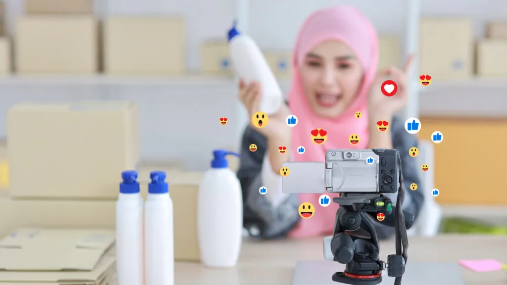

Unlocking the Power of Influencer Endorsements: A Guide to Effective Influencer Marketing Strategies
Influencer marketing is a type of social media marketing that involves collaborating with individuals who have a significant following on social media platforms to promote a brand or product. The goal of influencer marketing is to reach a broader audience through the influencer’s social media channels. The popularity of social media platforms like Instagram, Facebook, and Twitter has made influencer marketing a popular and effective marketing tactic.
Why Influencer Marketing Works
Influencer marketing has become a popular marketing tactic because it works. Influencers have built a loyal following that trusts their opinions and recommendations. By collaborating with an influencer, brands can tap into their followers, who are likely to have an interest in the brand’s products or services. Influencer marketing has been shown to increase brand awareness, drive sales, and build brand loyalty.
Influencer marketing is also a more authentic form of advertising compared to traditional forms of advertising. Influencers are not just endorsing the brand for money, but because they genuinely like the product or service. This authenticity helps build trust and credibility with the audience.
Types of Influencers

Before collaborating with an influencer, it is essential to understand the different types of influencers. The most common types of influencers are celebrities, macro-influencers, micro-influencers, and nano-influencers. Each of these influencer types has a different following size, which determines the scope of their influence. Celebrities have the largest following, while nano-influencers have the smallest following.
Celebrities typically have millions of followers and are suitable for brands that want to reach a broad audience. Macro-influencers have between 100,000 and 1 million followers and have a niche following. Micro-influencers have between 10,000 and 100,000 followers and have a highly engaged following. Nano-influencers have between 1,000 and 10,000 followers and are suitable for brands with a very niche audience.
Choosing the Right Influencer
Choosing the right influencer is crucial to the success of your influencer marketing campaign. The ideal influencer for your brand will depend on your niche, target audience, and campaign goals. When choosing an influencer, it is essential to look beyond their follower count and focus on factors such as engagement rate, audience demographics, and brand fit.
It is essential to find an influencer who aligns with your brand’s values and can authentically endorse your products or services. You should also consider the influencer’s content and ensure that it is high-quality and resonates with your brand’s image. To find the right influencer, you can use influencer marketing platforms or work with an influencer marketing agency.
How to Create an Influencer Marketing Campaign
Creating a successful influencer marketing campaign requires careful planning and execution. The first step in creating an influencer marketing campaign is to define your campaign goals and target audience. Once you have a clear understanding of your goals and audience, you can start looking for the right influencer to collaborate with.
The next step is to craft a compelling brief that outlines the campaign goals, deliverables, and expectations. The brief should include details such as the timeline, budget, and any guidelines for the influencer’s content. It is essential to establish clear communication with the influencer to ensure that
Conclusion
In conclusion, influencer marketing is a powerful marketing strategy that can help you reach your target audience, build brand awareness, and drive sales. To ensure the success of your influencer marketing campaign, it is essential to choose the right influencer, establish clear communication, and track your metrics accurately. With the insights provided in this article, you can create a successful influencer marketing campaign that helps you outrank your competitors in the search engine rankings.